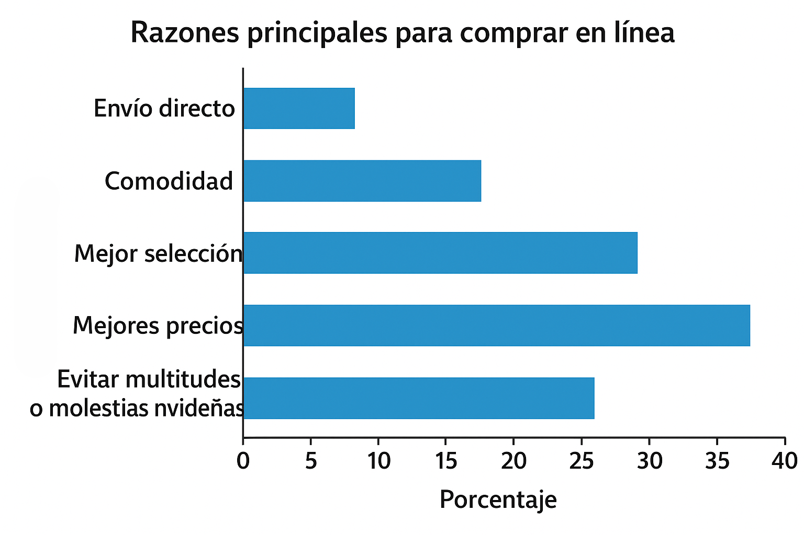
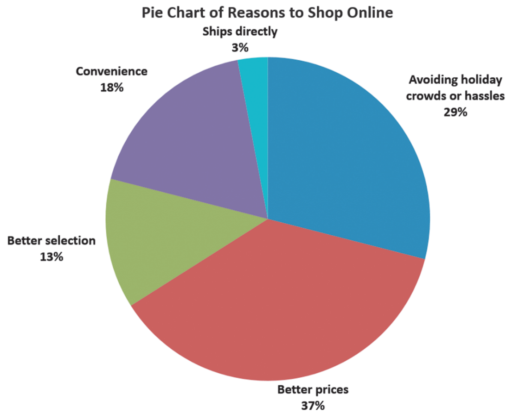
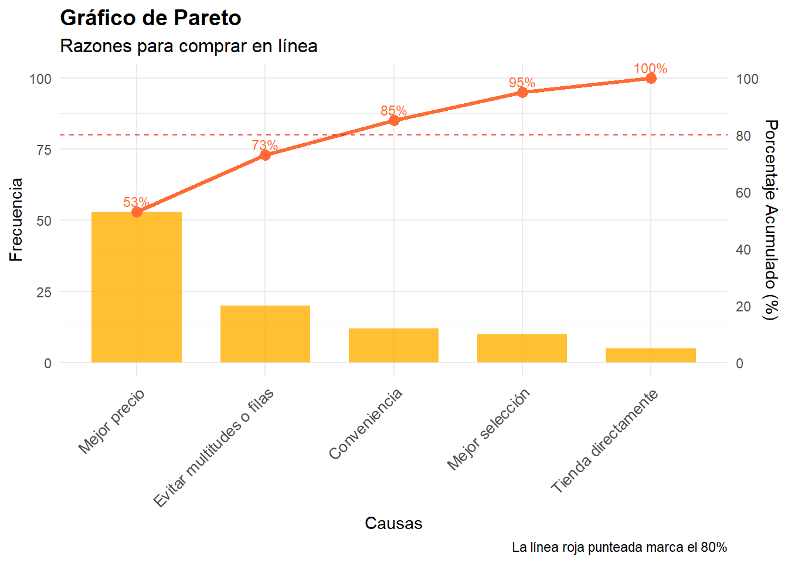
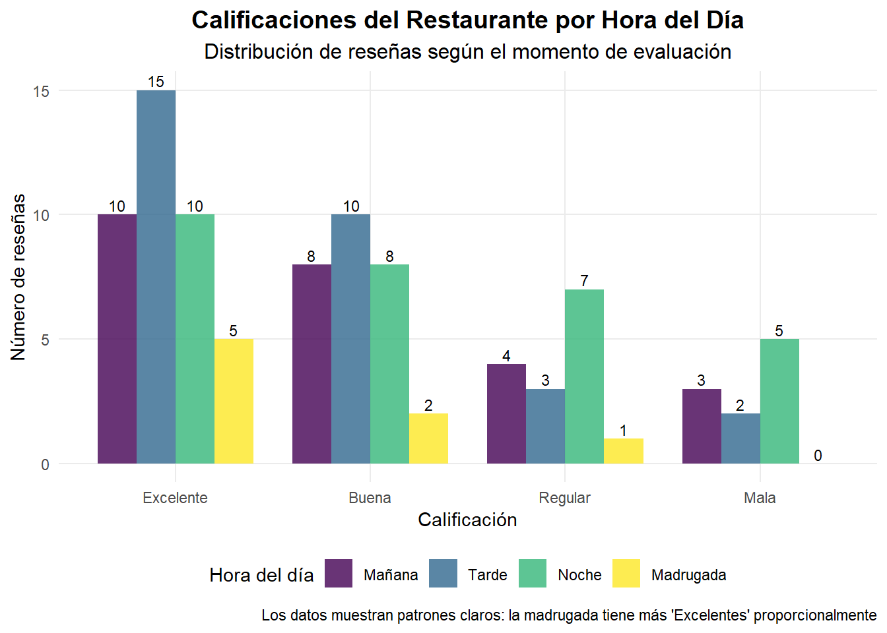
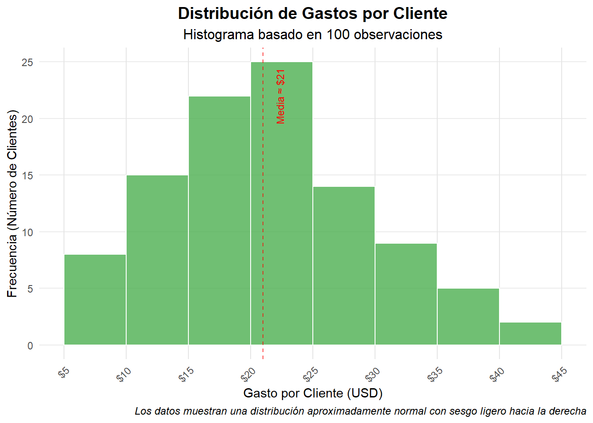
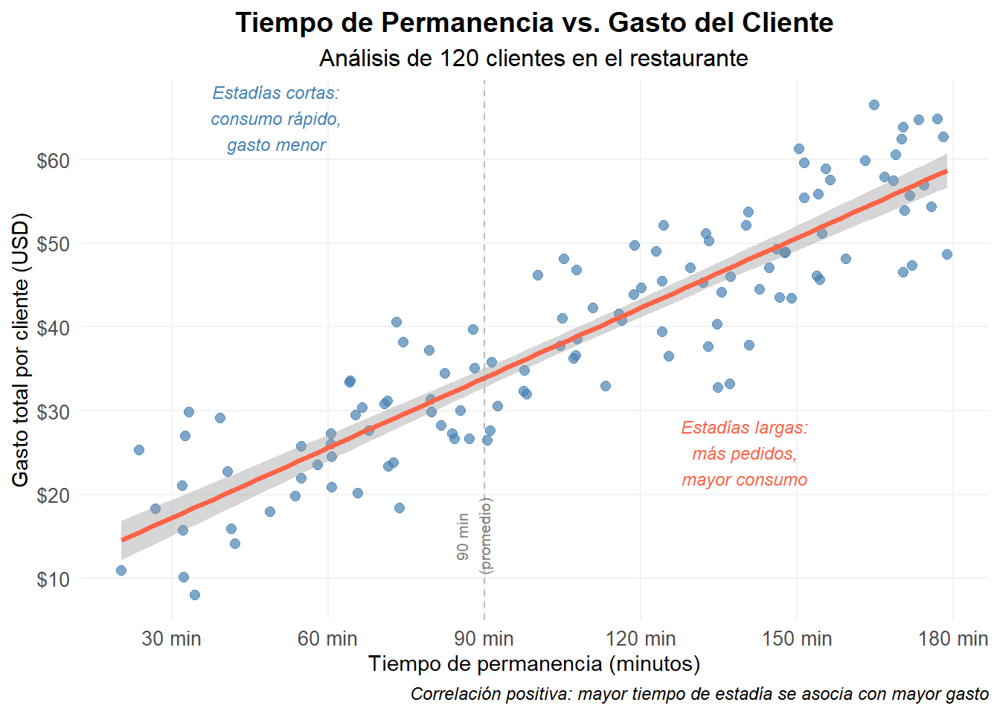

flowchart TD A[Variables] A --> B["Categoría (cualitativa)"] A --> C["Numérica (cuantitativa)"] B --> D["Nominal (clasificación)"] B --> E["Ordinal (orden jerárquico)"] C --> F[Discreta] C --> G[Continua] D --> H["Ej: Estado civil, Afiliación política, Color de ojos"] E --> I["Ej: Rankings, Bajo-Medio-Alto"] F --> J["Ej: Número de hijos, Defectos por hora"] G --> K["Ej: Peso, Voltaje"]
2 Fundamentos de Variables y Visualización de Datos
2.1 Introducción a Variables y Datos
Antes de manipular o graficar, es importante entender qué son los datos y las variables.
Definiciones clave
- Variable: Característica que puede cambiar entre observaciones (ej. género, ventas, PIB).
- Datos: Conjunto de observaciones (filas) con valores para esas variables (columnas).
2.1.1 Tipos de variables
Las variables se clasifican en dos grandes categorías según su naturaleza:
Entender el tipo de variable es clave porque:
- Define el resumen estadístico adecuado: No calculamos una media de colores de ojos.
- Determina el gráfico apropiado: Un histograma para variables numéricas, un gráfico de barras para categorías.
- Evita errores de interpretación: Un ordinal tratado como numérico puede dar conclusiones equivocadas.
Ejemplos de tipos de variables:
| Pregunta | Respuesta | Tipo de Variable |
|---|---|---|
| ¿Tiene perfil de Facebook? | Sí / No | Categórica Nominal |
| ¿Cuántos mensajes de texto ha enviado en los últimos dos días? | ________ (número entero) | Numérica Discreta |
| ¿Cuánto tiempo le tomó bajar la aplicación? | ________ (minutos o segundos) | Numérica Continua |
| ¿Cómo evaluaría su experiencia en Facebook? | Muy mala, Mala, Regular, Buena, Muy buena | Categórica Ordinal |
2.2 Organización de Datos Categóricos
2.2.1 Tablas para Datos Categóricos
Tabla resumen: Muestra frecuencias o porcentajes para cada categoría de la variable. A continuación mostramos cómo se distribuyen las calificaciones de nuestro restaurante en Google Maps, basadas en 100 reseñas:
| Calificación | Frecuencia | % sobre 100 reseñas |
|---|---|---|
| Excelente | 40 | 40% |
| Buena | 35 | 35% |
| Regular | 20 | 20% |
| Mala | 5 | 5% |
Tabla de contingencia: Relaciona dos o más variables categóricas. Muestra la frecuencia con la que ocurren combinaciones de categorías. Por ejemplo, las calificaciones según la hora del día:
| Calificación | Mañana (n, %) | Tarde (n, %) | Noche (n, %) | Madrugada (n, %) |
|---|---|---|---|---|
| Excelente | 10 (40%) | 15 (50%) | 10 (33.3%) | 5 (62.5%) |
| Buena | 8 (32%) | 10 (33.3%) | 8 (26.7%) | 2 (25%) |
| Regular | 4 (16%) | 3 (10%) | 7 (23.3%) | 1 (12.5%) |
| Mala | 3 (12%) | 2 (6.7%) | 5 (16.7%) | 0 (0%) |
| Total | 25 (100%) | 30 (100%) | 30 (100%) | 8 (100%) |
Al analizar la tabla de contingencia, podemos comparar cómo varían las calificaciones según la hora del día. Por ejemplo, la madrugada muestra un 62.5% de reseñas “Excelente” y ninguna “Mala”, lo que sugiere que quienes califican en ese horario son clientes muy satisfechos (posiblemente menos volumen y mejor atención). En cambio, durante la noche la proporción de calificaciones “Excelente” baja a 33.3% y aumentan las “Mala” (16.7%), lo que podría indicar saturación operativa o tiempos de espera más largos.
La tarde destaca por concentrar el mayor número de reseñas totales y un 50% de valoraciones “Excelente”, lo que la convierte en una franja estratégica para mantener estándares altos. Estos patrones permiten priorizar recursos: reforzar personal nocturno y replicar buenas prácticas de la madrugada y la tarde.
2.2.2 Visualizando datos categóricos
2.2.2.1 Gráfico de Barras
Los gráficos de barras son la herramienta más versátil para visualizar variables categóricas. Utilizan barras rectangulares cuya longitud (o altura) es proporcional a la frecuencia o porcentaje de cada categoría. Su principal ventaja es la facilidad para comparar visualmente diferentes categorías, ya que el ojo humano puede detectar rápidamente diferencias en longitud.
Las barras pueden orientarse vertical u horizontalmente, y son especialmente útiles cuando los nombres de las categorías son largos (mejor horizontal) o cuando queremos enfatizar el orden jerárquico de los valores (mejor vertical). A diferencia de otros gráficos, las barras deben comenzar siempre desde cero para no distorsionar las comparaciones visuales. Mira un ejemplo de gráfico de barras:

2.2.2.2 Gráfico de Torta (Pie Chart)
Los gráficos de torta representan datos categóricos como sectores de un círculo, donde cada sector es proporcional al porcentaje que representa esa categoría del total. La “torta” completa suma siempre 100%, y cada “rebanada” muestra visualmente qué proporción ocupa cada categoría.
Su principal fortaleza es mostrar la composición del total - es decir, cómo se distribuye un todo entre sus partes. Son especialmente útiles cuando queremos enfatizar que una categoría domina sobre las demás o cuando la pregunta clave es “¿qué porcentaje del total representa cada grupo?”. Por ejemplo, para mostrar la participación de mercado de diferentes marcas o la distribución del presupuesto entre departamentos. Este sería el gráfico de torta que muestra la misma información del gráfico de barras anterior:

Limitaciones del gráfico de torta
- Difícil comparación de sectores similares: El ojo humano no distingue bien diferencias pequeñas entre ángulos
- Máximo recomendado: No más de 5-7 categorías para mantener legibilidad
- Mejor alternativa: Considera un gráfico de barras si necesitas comparar categorías con valores muy cercanos
Los gráficos de torta funcionan mejor cuando hay una o dos categorías claramente dominantes y el resto son minoritarias. Si todas las categorías tienen tamaños similares, un gráfico de barras será más efetorctivo para la comparación visual.
2.2.2.3 Gráfico de Pareto
El gráfico de Pareto combina barras y una línea para identificar las categorías más importantes según el principio de Pareto (regla 80-20). Las barras muestran las frecuencias ordenadas de mayor a menor, mientras que la línea representa el porcentaje acumulado hasta llegar al 100%.
Su objetivo principal es priorizar - ayuda a identificar las pocas categorías que concentran la mayor parte del problema o fenómeno. Por ejemplo, en control de calidad, unas pocas causas suelen generar la mayoría de los defectos; en ventas, unos pocos productos pueden generar la mayor parte de los ingresos.
Elementos clave del gráfico de Pareto:
- Barras ordenadas: De mayor a menor frecuencia (izquierda a derecha)
- Línea acumulada: Muestra el porcentaje que suman las categorías hasta ese punto
- Principio 80-20: Busca el punto donde pocas categorías explican la mayoría del fenómeno

¿Cuándo usar un gráfico de Pareto?
- Identificar prioridades: ¿Qué problemas atender primero?
- Análisis de causas: ¿Qué factores tienen mayor impacto?
- Optimización de recursos: ¿Dónde enfocar los esfuerzos?
- Seguimiento de mejoras: ¿Las acciones redujeron las causas principales?
Ejemplo práctico: Si analizamos las quejas de un restaurante y encontramos que “comida fría” y “tiempo de espera” representan el 75% de todas las quejas, sabemos que resolver estos dos problemas tendrá el mayor impacto en la satisfacción del cliente. El gráfico de Pareto haría visible esta concentración de manera inmediata.
2.2.3 Visualizando datos categóricos: Gráfico de Barras Emparejadas
El gráfico de barras emparejadas (o agrupadas) se utiliza cuando queremos comparar cómo se distribuye una variable categórica principal dentro de los niveles de otra variable categórica. Cada grupo del eje horizontal representa una categoría de la primera variable y, dentro de cada grupo, las barras muestran las categorías de la segunda.
Ejemplo: Si analizamos las calificaciones de un restaurante (Excelente, Buena, Regular, Mala) según la hora del día en que se dejó la reseña (Mañana, Tarde, Noche), podemos ver rápidamente en qué horario se concentran más las opiniones positivas.
Este tipo de gráfico ayuda a detectar patrones de comparación entre grupos: diferencias claras en alturas de barras indican posibles áreas de mejora o fortalezas.

Cuándo usarlo:
- Cuando tienes dos variables categóricas.
- Para comparar proporciones o frecuencias entre subgrupos.
- Como complemento visual de una tabla de contingencia.
Recomendaciones:
- Ordena las categorías de forma lógica (por tiempo, intensidad, etc.).
- Usa una leyenda clara.
- Evita el exceso de colores; prioriza el contraste.
En resumen: antes de elegir cómo mostrar tus datos categóricos, conviene pensar cuántas variables estás analizando. El siguiente esquema resume las opciones más comunes: si trabajas con una sola variable, puedes resumirla con una tabla y luego elegir un gráfico de barras, de torta o de Pareto según el objetivo. Si tienes dos variables categóricas, una tabla de contingencia es el punto de partida y suele representarse con un gráfico de barras emparejadas para comparar grupos.
flowchart TB A[Datos categóricos] A --> B[Visualización] B --> C[Tabla Resumen - 1 variable] B --> D[Tabla Contingencia - 2 variables] C --> E[Gráfico de Barras] C --> F[Gráfico de torta] C --> G[Gráfico de Pareto] D --> H[Gráfico de Barras emparejadas]
2.2.4 Visualizando datos numéricos
2.2.4.1 Distribución de frecuencia
Imagina que registras el monto gastado por cada cliente en tu restaurante durante un día. Tienes muchos valores sueltos y quieres resumirlos para entender mejor los patrones.
La distribución de frecuencia es una tabla que agrupa esos montos en categorías numéricas ordenadas (también llamadas clases) y cuenta cuántos clientes caen en cada una.
¿Cómo elegir las categorías?
Primero necesitas definir categorías adecuadas: decidir sus límites (fronteras) y su ancho.
El número de categorías depende del rango de los datos (máximo – mínimo). Si los gastos van desde $5 hasta $55, el rango es 50.
Cuando el rango es grande solemos usar más categorías; en la práctica, entre 5 y 15 funciona bien.
¿Cómo calcular el ancho?
Si decides usar, por ejemplo, 10 categorías:
\[ \text{Ancho} = \frac{\text{Rango}}{\text{Número de categorías}} = \frac{50}{10} = 5 \]
Eso significa que tus clases podrían ser: $5–<$10, $10–<$15, $15–<$20, … hasta $55. Luego cuentas cuántos clientes gastaron en cada intervalo y obtienes una tabla clara para analizar tendencias (por ejemplo, “la mayoría gasta entre $15 y $25”).
Esta tabla te permite pasar del desorden de datos individuales a una visión estructurada que facilita la toma de decisiones.
Ejemplo práctico: Distribución de gastos
Supongamos que registramos el gasto de 100 clientes y los agrupamos usando intervalos de $5:
| Intervalo (USD) | Frecuencia | % Relativo | Frec. Acumulada | % Acumulado |
|---|---|---|---|---|
| $5 - <$10 | 8 | 8% | 8 | 8% |
| $10 - <$15 | 15 | 15% | 23 | 23% |
| $15 - <$20 | 22 | 22% | 45 | 45% |
| $20 - <$25 | 25 | 25% | 70 | 70% |
| $25 - <$30 | 14 | 14% | 84 | 84% |
| $30 - <$35 | 9 | 9% | 93 | 93% |
| $35 - <$40 | 5 | 5% | 98 | 98% |
| $40 - <$45 | 2 | 2% | 100 | 100% |
| Total | 100 | 100% | - | - |
Interpretación clave:
- Concentración: El 70% de los clientes gastó menos de $25
- Cola: Solo el 7% gastó más de $35
- Patrón: La mayoría de clientes (67%) gasta entre $10-$30
2.2.4.2 Histograma
Siguiendo con el ejemplo de los gastos en el restaurante, el histograma es la versión gráfica de la tabla de distribución de frecuencia.
En lugar de mostrar los números en una tabla, dibujamos una barra para cada categoría (intervalo de gasto).
- El eje horizontal muestra los intervalos: $5–<$10, $10–<$15, etc.
- El eje vertical muestra la frecuencia (o el porcentaje) de clientes en cada intervalo.
- Las barras van pegadas porque los intervalos son continuos: representan rangos de una misma variable numérica.

Un histograma es la representación gráfica de una distribución de frecuencias para datos numéricos continuos. A diferencia del gráfico de barras (para datos categóricos), el histograma muestra barras adyacentes sin espacios entre ellas, lo que refleja la naturaleza continua de los datos.
Características clave del histograma:
- Eje X: Intervalos de valores (clases) de la variable numérica
- Eje Y: Frecuencia (cantidad de observaciones en cada intervalo)
- Barras conectadas: Sin espacios, indicando continuidad de los datos
- Forma de distribución: Permite identificar patrones como simetría, sesgo o multimodalidad
El histograma nos permite visualizar rápidamente:
- ¿Dónde se concentran los datos? (moda o pico más alto)
- ¿Cómo se distribuyen? (simétrica, sesgada a la izquierda/derecha)
- ¿Hay valores atípicos? (barras aisladas en los extremos)
Interpretación del histograma
Forma de la distribución:
- Aproximadamente normal: La distribución tiene forma de campana con un pico central
- Sesgo ligero: Hay una “cola” más larga hacia la derecha (valores altos)
- Concentración: La mayoría de clientes gasta entre $15-$30
Información práctica:
- Valor típico: Alrededor de $20-$25 (pico del histograma)
- Rango común: El 70% de clientes gasta menos de $25
- Valores extremos: Muy pocos clientes gastan más de $35
¿Cuándo usar un histograma vs. gráfico de barras?
| Criterio | Histograma | Gráfico de Barras |
|---|---|---|
| Tipo de datos | Numéricos continuos | Categóricos |
| Separación de barras | Sin espacios (datos continuos) | Con espacios (categorías distintas) |
| Objetivo principal | Mostrar distribución de frecuencias | Comparar categorías |
| Ejemplo | Edades, pesos, tiempos | Colores, marcas, géneros |
2.2.4.3 Gráfico de Dispersión
El gráfico de dispersión (scatter plot) es la herramienta principal para visualizar la relación entre dos variables numéricas. A diferencia del histograma que muestra una sola variable, el gráfico de dispersión permite explorar si existe algún patrón, tendencia o correlación entre dos mediciones diferentes.
Sigamos con el restaurante: además del gasto de cada cliente (en dólares), registramos el tiempo que permanecen en el establecimiento (en minutos). Queremos saber si existe alguna relación entre estas dos variables continuas.
En el gráfico de dispersión: - Cada punto representa a un cliente individual. - El eje X muestra el tiempo de permanencia (en minutos). - El eje Y muestra el gasto total de ese cliente (en dólares).
Patrones que puedes identificar:
Tipos de relaciones en un gráfico de dispersión
- Correlación positiva: Los puntos forman una nube que asciende (↗). A mayor X, mayor Y
- Correlación negativa: Los puntos forman una nube que desciende (↘). A mayor X, menor Y
- Sin correlación: Los puntos se distribuyen aleatoriamente sin patrón claro
- Correlación curvilínea: Los puntos siguen una curva (ej. forma de U o parábola)

Interpretación del gráfico de dispersión:
El ejemplo muestra una correlación positiva entre el tiempo de permanencia y el gasto del cliente. Esta relación tiene sentido desde la perspectiva del negocio:
- Tendencia ascendente: Los clientes que permanecen más tiempo tienden a gastar más
- Relación lógica: Más tiempo permite más pedidos (aperitivos, postres, bebidas adicionales)
- Variabilidad natural: No todos los puntos siguen la línea perfectamente - algunos clientes gastan mucho en poco tiempo (pedidos caros) y otros gastan poco aunque permanezcan mucho tiempo
- Rango de comportamientos: Clientes con estadías cortas (20-60 min) gastan típicamente $8-$30, mientras que los de estadías largas (120-180 min) gastan frecuentemente $35-$70
Insights para el negocio:
- Estrategia de retención: Mantener a los clientes más tiempo puede incrementar las ventas
- Ambiente acogedor: Espacios cómodos que inviten a quedarse más tiempo
- Menú estratégico: Ofrecer aperitivos, postres y bebidas para extender la experiencia
- Identificar oportunidades: Clientes con estadías largas pero bajo gasto podrían necesitar más atención del mesero
¿Cuándo usar un gráfico de dispersión?
Ideal para:
- Explorar relaciones entre dos variables numéricas
- Identificar correlaciones positivas, negativas o ausencia de correlación
- Detectar valores atípicos (outliers)
- Validar supuestos antes de análisis estadísticos más avanzados
Limitaciones:
- Solo muestra dos variables a la vez
- La correlación no implica causalidad
- Puede ser difícil interpretar con muchos puntos sobrepuestos